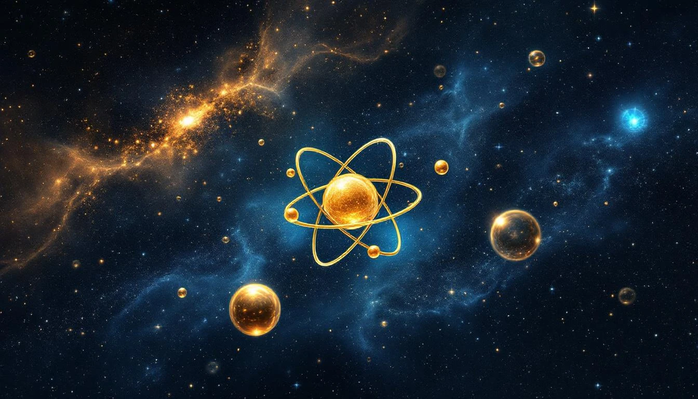

THE FINE STRUCTURE CONSTANT
The fine structure constant α ≈ 1/137 is one of the most mysterious numbers in physics. It determines the strength of electromagnetic interactions - how light interacts with matter.
Gold's atomic number 79, multiplied by the bridge number 1729, encodes this constant:
The Gold-Alpha Connection
GOLD (Z = 79)
├── Atomic number: 79
├── Bridge product: 79 × 1729 = 136,591
├── Compare: 137 × 1000 = 137,000
└── Difference: only 0.3%
79 × 1729 = 136,591
137 × 1000 = 137,000
≈ α⁻¹ × 1000
Gold × Bridge ≈ Fine Structure × 1000
The most precious metal encodes
the electromagnetic coupling constant.
WHY α ≈ 1/137?
The fine structure constant determines:
- How strongly electrons interact with photons
- The size of atoms relative to their wavelengths
- The speed of electrons in atoms (v ≈ αc)
- The splitting of spectral lines (fine structure)
The Magic Number 137
α = e² / (4πε₀ℏc) ≈ 1/137.036
If α were different:
- Larger: atoms would collapse
- Smaller: no chemistry possible
137 ≈ 1729 / 12.6...
≈ Bridge / (4π)
The fine structure constant is
the bridge divided by a full rotation.
Gold encodes α⁻¹. The most valued metal carries the electromagnetic code.
WHY GOLD IS GOLD
Gold's distinctive color comes from relativistic effects. Its electrons move so fast (due to 79 protons pulling them) that relativistic corrections change which wavelengths are absorbed.
Relativistic Gold
Gold absorbs blue light, reflects yellow/gold.
This happens because:
- 79 protons create strong nuclear charge
- Inner electrons move at ~0.5c
- Relativistic mass increase contracts orbitals
- Energy levels shift, changing absorption
Gold's color IS the fine structure constant
made visible. α determines how electrons
respond to light.
GOLD IN CULTURE
Humans have valued gold for millennia. Its incorruptibility (doesn't oxidize), its beauty, and its rarity made it the universal symbol of value.
Perhaps this attraction is not arbitrary. Gold encodes fundamental physics. We value what encodes the electromagnetic code of reality.